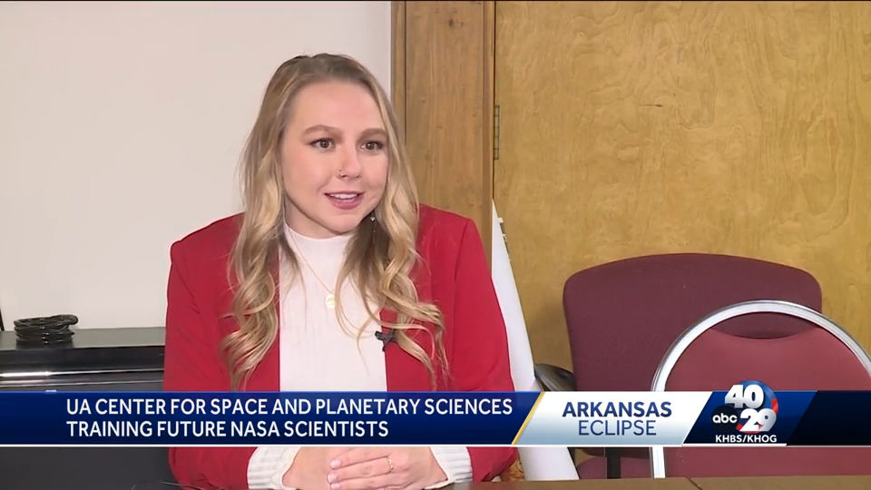
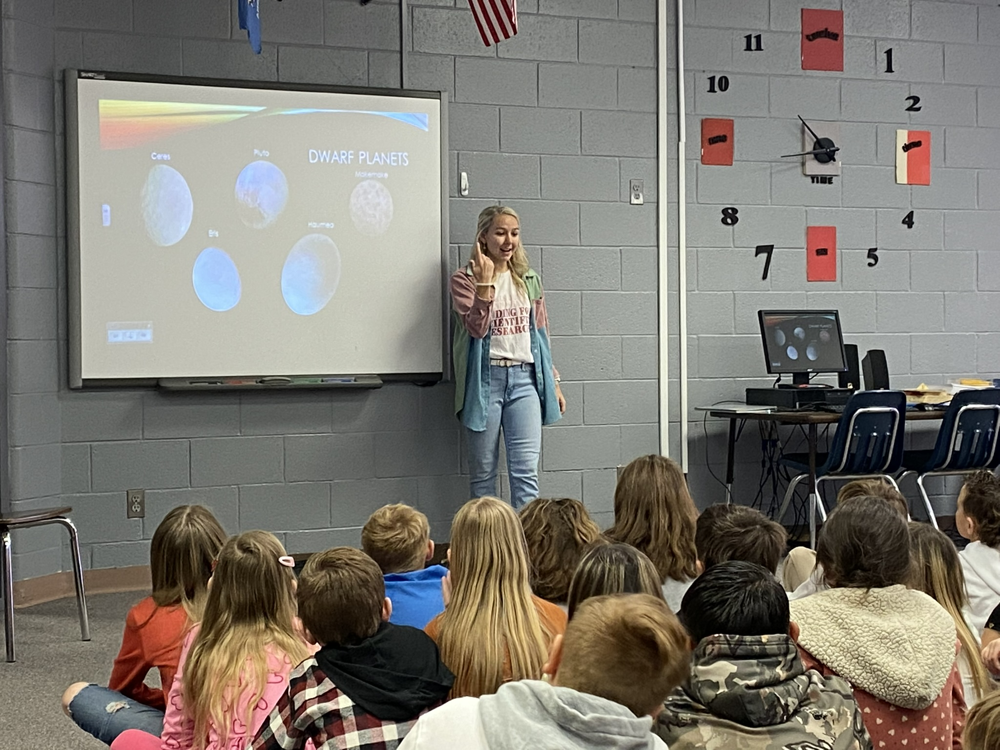
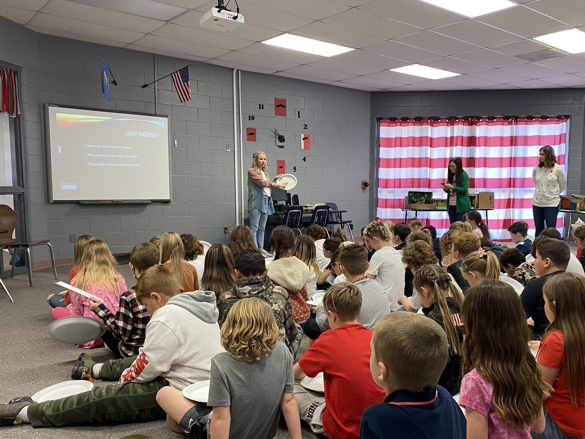

Planetary Science Postdoctoral Research Fellow
Solar eclipse excites members of University of Arkansas program.

Watch this interviewThe April 8 solar eclipse will bring totality to parts of the Natural State, and members of a University of Arkansas program can't wait for it to happen.
"I think that, just in general, it's really exciting for people that are not scientists to get a glance into astronomy," said PhD candidate Racine Cleveland.
Cleveland is a student at the U of A's Center for Space and Planetary Sciences. She's trying to get a better understanding of carbon dioxide levels on Mars. She said there is a lot of free data from NASA on the internet, but not enough people look at the data on Mars. "I am taking the images," she said, "I'm taking those pictures that we've taken and getting science out of them. Getting something substantial that could, in turn, lead to understanding of the atmosphere."
Officials with the center said half of their graduates end up working for NASA either directly or indirectly. Some students might even develop missions for the organization at some point.
Cleveland said she hopes the April 8 eclipse will get more people into studying science. Other students agree, including fellow PhD candidate Shelby Osborne.
Osborne studies the beginning of life on Earth, and she said she plans to watch the eclipse with her family in Russellville. "I'm going to the tallest mountain," she said, "and I'm going to experience the highest percentage of the eclipse that can be seen in Arkansas."
Students with the center said they wanted people to go to STEM meetings if they are interested in becoming scientists. Some of the areas of research at the center include astrobiology, ice on Pluto, and extreme temperature electronics. - Nathan Smallwood 40/29 News February 2024
Another Prague Graduate Give Back


Prague 2014 graduate Racine Cleveland visiting with the Prague Elementary 3rd grade classes last week. She talked to the students about planets in our solar system and how their orbits work. Racine is currently a Space and Planetary Science PhD student at the University of Arkansas. She does research funded by a grant that her science team were awards by NASA. (Submitted by Mrs. Nichole Bailey) - Prague (Oklahoma) Times New Herald February 2022